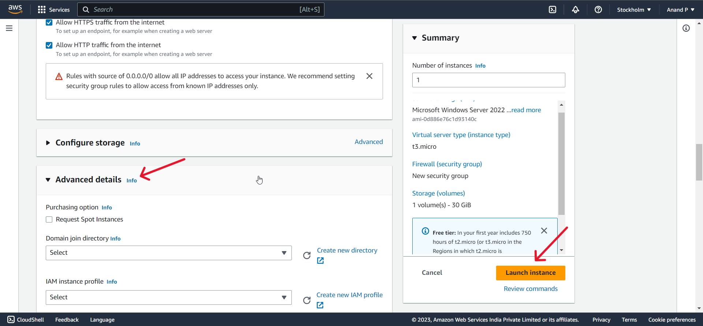

1 .Login to your aws account and click the Services in the top left corner , then click Compute and then EC2

2 . Click Launch instance to create new EC2 instance
3 . Give a name for your instance
4 . Select an OS and Amazon machine image
5 . Under Key pair(login) click create new key pair
6 . Enter key pair name and select private key file format as .pem , then click create key pair
7 . Choose a directory to store your key pair and then save it. ( Recommended to keep the copy of the file in your google drive or any other cloud storage , because No, it is not possible to download the key pair file again from the AWS EC2 console. Once you create a key pair in AWS EC2, the private key file (.pem) is only available for download at the time of creation. AWS does not store the private key file on their servers for security reasons.)
8 . Make sure that the key pair that we are created is selected under key pair name
9 . Make these changes if you wanted
10 . You can Configure Advanced details as your wish (If you are a new user leave it as default). Atlast click Launch instance
11 . After few seconds you will get a Success Message